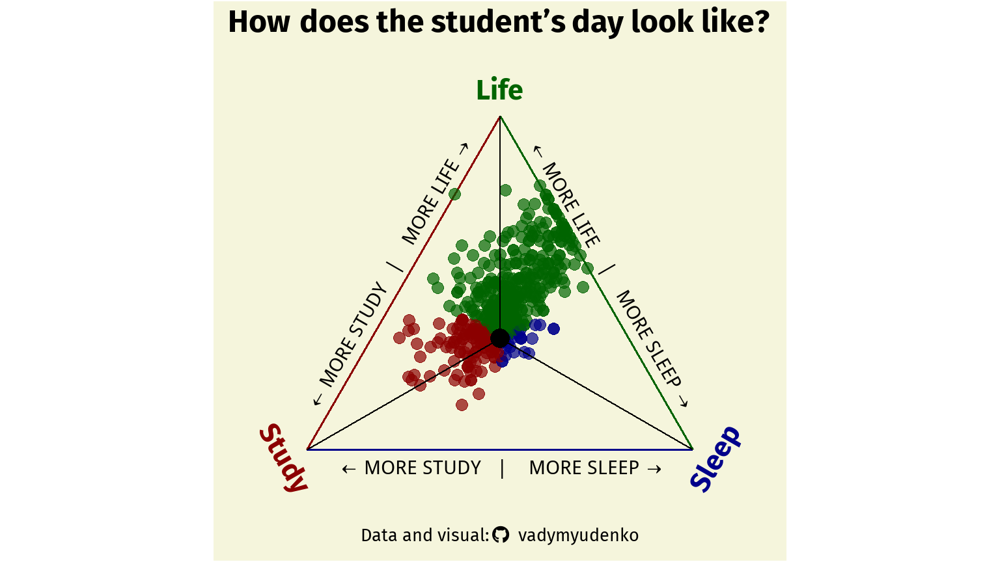
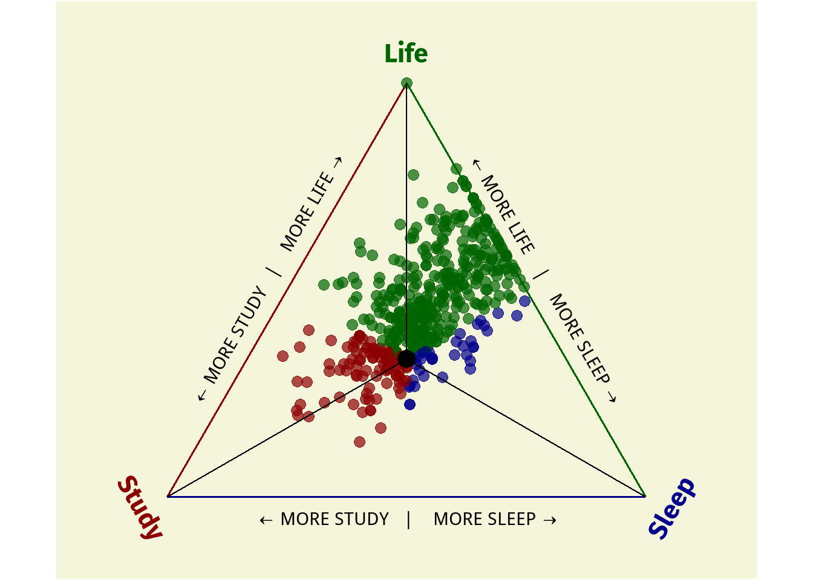
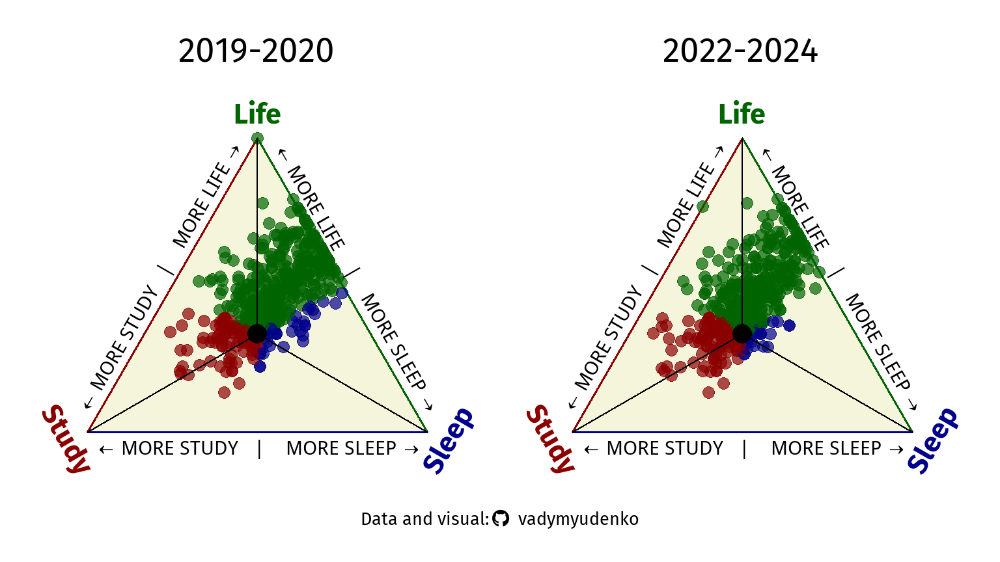

Hi! Yes, that student is me! From October 2022 to January 2024, I have been time tracking my daily life, and this plot is an attempt to measure study-life balance of my student times.
You’re looking at a ternary plot. They are used to represent the proportion of 3 variables as positions in a triangle. Here, I use it to show the study-life balance. Points toward the BOTTOM LEFT of the triangle represent days with more study1, those few toward the BOTTOM RIGHT have more sleep, and those toward the TOP is life—socializing, eating, going to the gym, shopping, watching cat memes and doomscrolling, and the list continues, capturing all the little moments that make up daily life.
1 This category is called Study for simplicity. It comprises of multiple activities: actual Study, Work, Reading and Planning.
Majority of the days are centered around the barycenter (⬤) of the triangle, meaning that most days were mostly balanced. The cloud of point near the top right indicate days when I had little study and mostly relaxed or socialized. Meanwhile, points to the LEFT are days when I studied or socialized often at the expense of sleep

There is also data from 2019-2020, when I first started time-tracking. Not much has changed since then. Occasionally, there are outliers—days with excessive studying or too much sleep—but overall, I have maintained a good balance between study, life, and sleep.

Inspiration and References
The Worst Tweeter In Politics Isn’t Trump (FiveThirtyEight)